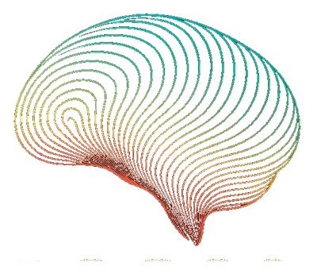

Eso cambia todo lo que hago —
la clínica, el audio, la escritura, la cultura.
Ronald Escobar · Psiquiatra · Guatemala
La psiquiatría me asusta. No los pacientes. No el diagnóstico. Me asusta la comodidad con la que mi gremio nombra lo que no entiende. Me asusta la velocidad con la que convertimos el sufrimiento humano en categoría, en código, en receta.
Cada persona que entra a mi consultorio trae tres historias.
La que cuenta. La que no puede contar.
Y la que ni siquiera sabe que está contando.
Mi trabajo es escuchar las tres al mismo tiempo.
No vengas a que te diga qué tenés. Vení a conocerte. Construimos el diagnóstico juntos — porque es tu cuerpo, y decidís vos.
Jamás voy a recetarte algo que no sepa lo que es tomar.
Una mirada antropológica al trastorno bipolar. Observar otro espejo, otra cultura, otro ser humano — para empezar a verme. Con Pablo Rojas Castillo.
Fui a Livingston a buscar un síndrome. Lo que encontré fue una epistemología.
Conocer el proyecto →Próximamente
Dónde Sócrates es un espacio para pensar en voz alta antes de decidir. Sin compromiso. Sin diagnóstico. Sin que nadie te presione.
No es terapia. Es una conversación para ordenar lo que traés antes de tu primera consulta.
Conversar ahora
Psiquiatría basada en evidencia, escucha sin juicio, y un proceso que construimos juntos.
"No vengas a que te diga qué tenés.
Vení a conocerte."
Neurociencia, Arte y Humanidad. Porque la mente humana es demasiado compleja, demasiado bella y demasiado frágil como para ser reducida a un diagnóstico y una dosis.
Integra Medical Center · Clínica 810
Ciudad de Guatemala · Presencial y online
Una sola pregunta. Múltiples formatos. Un solo movimiento.
Una voz desde el otro lado. De la individualidad al colectivo. 2 temporadas · 29 episodios.
Escuchar → Clínico-creativo6 semanas para artistas bloqueados. Contención clínica y activación creativa. Con acceso a El Acto de Crear — inspirado en Rick Rubin. También en los cursos de Alejandro Marré.
Conocer → Experiencia sonoraLa música como tecnología de acceso al interior.
Conocer → EscrituraEnsayo, clínica, cultura y vida interior. Textos para leer con tiempo.
Leer → NutraceuticsModuladores fisiológicos de sistemas. No síntomas aislados — sistemas integrados.
Próximamente →
Un llamado a la acción colectiva que respeta al individuo.
Todo lo anterior apunta hacia aquí.
Psicoeducación y consciencia para Guatemala —
porque todos somos todos, y ya es hora de darnos cuenta.
Yeinmy coordina la agenda.
Atención presencial y online.
Horario de atención: lunes a viernes.
Para emergencias psiquiátricas, acudí al servicio de urgencias más cercano.
Ubicación
Integra Medical Center
Clínica 810 · Ciudad de Guatemala